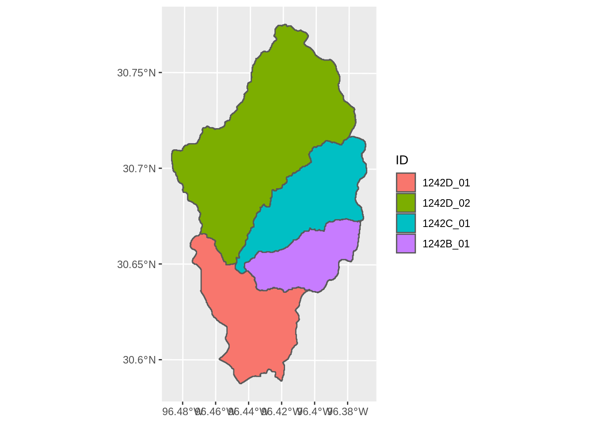

Template
2020-10-20
Prereqs
Whitebox
This tutorial will demonstrate watershed delineation in with R (R Core Team 2020). The tutorial relies heavily on the whitebox package, which is a frontend R interface to the stand alone WhiteboxTools geospatial analysis platform (Wu 2020; Lindsay 2016). Unfortunately, whitebox is not on CRAN. Depending on your system setup, your difficulty getting it installed will vary. I need to write another tutorial on installing R packages from sources other than CRAN. In short, if you haven’t done this before, Windows users will need to download and install RTools to build and compile R packages; Mac users need Xcode.
Other Packages
Make sure the following libraries are installed. The archive package is only needed if you are downloading and extracting data with your R script like in this example. If you are using raster and shapefile data you have stored locally, it is not required.
## Loading required package: sp## Loading required package: abind## Loading required package: sf## Linking to GEOS 3.7.1, GDAL 2.2.3, PROJ 4.9.3library(sf)
if (!require(archive)) remotes::install_github("jimhester/archive",
upgrade = "never",
quiet = TRUE)## Loading required package: archive## ── Attaching packages ─────────────────────────────────────── tidyverse 1.3.0 ──## ✔ ggplot2 3.3.2 ✔ purrr 0.3.4
## ✔ tibble 3.0.4 ✔ dplyr 1.0.2
## ✔ tidyr 1.1.2 ✔ stringr 1.4.0
## ✔ readr 1.4.0 ✔ forcats 0.5.0## ── Conflicts ────────────────────────────────────────── tidyverse_conflicts() ──
## ✖ tidyr::extract() masks raster::extract()
## ✖ dplyr::filter() masks stats::filter()
## ✖ dplyr::lag() masks stats::lag()
## ✖ dplyr::select() masks raster::select()Data
I recommend using the hydro-reinforced elevation data from the NHDPlusV2. If you have this data locally, like I do, you can skip the next few steps and read in the data like the following (part of my file path obscured, but you should get the jist):
elevation <- raster("C:/Users/michael.schramm/██████████████████████████/NHDPlus2/NHDPlusTX/NHDPlus12/NHDPlusHydrodem12b/hydrodem")The function below downloads the NHD raster data by state/region from https://nhdplus.com/NHDPlus/ and returns it as a raster object in R.
## this function will download. extract, and read the nhd raster
download_nhd <- function(url,
rel_path) {
# download the files
tmpfile <- tempfile()
ras <- download.file(url = url,
destfile = tmpfile,
mode = "wb")
# unzip the raster
tmpdir <- tempdir()
archive_extract(tmpfile, tmpdir)
filepath <- paste0(tmpdir, rel_path)
# reads the raster
ras <- raster(filepath)
# deletes temp
unlink(tmpdir)
unlink(tmpfile)
return(ras)
}
## note that the rel_path forward slashes should be escaped backslashes on windows systems
elevation <- download_nhd(url = "http://www.horizon-systems.com/NHDPlusData/NHDPlusV21/Data/NHDPlusTX/NHDPlusV21_TX_12_12b_Hydrodem_01.7z",
rel_path = "/NHDPlusTX/NHDPlus12/NHDPlusHydrodem12b/hydrodem")elevation is a fairly large raster object, we want to scale it down before doing any processing. Download or read in the watershed boundary dataset to provide some reasonable options for cropping the raster to a manageable size. If you have the NHDPlus dataset locally, something like the following will work:
elevation <- shapefile("C:/Users/michael.schramm/██████████████████████████/NHDPlus2/NHDPlusTX/NHDPlus12/WBDSnapshot/WBD/WBD_Subwatershed")Otherwise, download and read it into R with the following:
## this function will download. extract, and read the nhd wbd dataset
download_wbd <- function(url,
rel_path) {
# download the files
tmpfile <- tempfile()
ras <- download.file(url = url,
destfile = tmpfile,
mode = "wb")
# unzip the raster
tmpdir <- tempdir()
archive_extract(tmpfile, tmpdir)
filepath <- paste0(tmpdir, rel_path)
# reads the raster
shp <- shapefile(filepath)
# deletes temp
unlink(tmpdir)
unlink(tmpfile)
return(shp)
}
wbd <- download_wbd(url = "http://www.horizon-systems.com/NHDPlusData/NHDPlusV21/Data/NHDPlusTX/NHDPlusV21_TX_12_WBDSnapshot_03.7z",
rel_path = "/NHDPlusTX/NHDPlus12/WBDSnapshot/WBD/WBD_Subwatershed")Now we have a large raster and a large shapefile. I want to clip this to a particular area of interest by first by filtering wbd to a HUC_12 of interest, then cropping elevation to the spatial extent of wbd.
## first we need to make sure the same projection is used
wbd <- spTransform(wbd, crs(elevation))
## filter to desired HUC_12
wbd <- wbd[wbd$HUC_12=="120701010702",]
## crop elevation to wbd extent
elevation <- crop(elevation, extent(wbd))
## make sure this looks reasonable
plot(elevation)
plot(wbd, add = TRUE)Finally, we need to identify the location(s) to delineate the watershed(s) from. We are going to use the downstream node of the TCEQ Assessment Unit polylines:
## can use the download_wbd_function to download and load polyline data
au <- download_wbd(url = "https://opendata.arcgis.com/datasets/175c3cb32f2840eca2bf877b93173ff9_4.zip?outSR=%7B%22falseM%22%3A-100000%2C%22xyTolerance%22%3A8.98315284119521e-9%2C%22mUnits%22%3A10000%2C%22zUnits%22%3A1%2C%22latestWkid%22%3A4269%2C%22zTolerance%22%3A2%2C%22wkid%22%3A4269%2C%22xyUnits%22%3A11258999068426.24%2C%22mTolerance%22%3A0.001%2C%22falseX%22%3A-400%2C%22falseY%22%3A-400%2C%22falseZ%22%3A0%7D",
rel_path = "/Surface_Water.shp")
## subset AU to lines of interest
au <- au[au$AU_ID %in% c("1242D_01", "1242D_02", "1242B_01", "1242C_01"),]
## project the AU
au <- spTransform(au, crs(elevation))## this function will convert the lines points and get the ending coordinates of the line
## this assumes the line goes upstream to downstream
get_endpoints <- function(x) {
crds <- x %>%
split(.$AU_ID) %>%
map(~{
# this actual shifts the point just slightly upstream
# since the AU lines are often on the confluence with
# the larger main segment
nrow0 <- dim(geom(.x))[1] - 10
geom(.x)[nrow0,c("x","y")]
})
crds
}
## this is a clumsy implementation,
## I'm sure there is a better way
endpoints <- get_endpoints(au)
endpoints <- endpoints %>%
map_df(~as_tibble(t(as.matrix(.x)))) %>% ## maps the coords by row
mutate(id = names(endpoints)) ## this provides id by row
pourpoints <- SpatialPointsDataFrame(coords = endpoints[,c(1,2)],
data = endpoints %>% dplyr::select(id),
proj4string = crs(au))
plot(au, col = "dodgerblue")
points(pourpoints)
Delineate
Write Data
The whitebox functions read and write actual shapefile or raster files to your drive and not R objects like most functions. Right now we have the elevation and point data as objects. We need to write these too disc before using whitebox. You may want to save this data anyways into your project folder.
For this tutorial, I am just writing the data to a temporary directory. Adjust the file locations as needed for your own setup.
## save elevation to temporary file
file_elevation <- file.path(tempdir(), "elevation.tif")
writeRaster(elevation, filename = file_elevation, overwrite = TRUE)
## save pourpoints to temporary file
file_pourpoints <- file.path(tempdir(), "pourpoint.shp")
shapefile(pourpoints, filename = file_pourpoints, overwrite = TRUE)whitebox Functions
Watershed delineation follows this general process:
Fill or breach depressions - Isolated low areas are either filled to match the surrounding elevation, or a breach is added to the depressed area. This is done to prevent the delineation process from trying to drain all the surronding land into the isolated depression. This is evident when your final watershed has lots of holes in it.
Generate flow direction raster - For every cell, the flow direction (called pointer in whitebox) will identify one of 8 surrounding cells that overland flow will drain to.
Generate flow accumulation raster - Counts the number of cells or area that drains into every cell.
Extract streams (optional) - This identifies a stream network from the flow accumulation raster based on some minimum number of cells that drain into a given cell.
Snap pour points - The points that are delineated from are not precisely aligned with the elevation cells. Furthermore, they might be closer to an offstream cell then the mainstream cell we are interested in delineating. If the points are not precisely lined up to the grid, the resulting watershed delineation will be incorrect. So, we “snap” the points to the closest stream network based on a minimum distance.
whiteboxhas smart ways of snapping the pour points to ensure the correct stream is used.Delineate one or more basin - Use the pour points to identify all the cells the drain to a given pour point. This will generate a raster.
Raster to polygon - We almost always use the watershed polygons to map and summarize data, so convert the raster to a polygon.
Generally speaking, the hydroreinforced DEMs already has step 1 completed on it. Furthermore, you can download preprocessed flow accumulation and flow direction rasters to streamline your workflow. However, I am going to demonstrate all the steps.
Breach Depressions
tmp_directory <- tempdir()
file_breached <- file.path(tmp_directory, "breached.tif")
wbt_breach_depressions_least_cost(dem = file_elevation,
output = file_breached,
dist = 0,
fill = TRUE)## [1] "breach_depressions_least_cost - Elapsed Time (excluding I/O): 0.33s"Flow Direction
file_pointer <- file.path(tmp_directory, "pointer.tif")
wbt_rho8_pointer(dem = file_breached,
output = file_pointer)## [1] "rho8_pointer - Elapsed Time (excluding I/O): 0.22s"Flow Accumulation
file_accumulation <- file.path(tmp_directory, "fac.tif")
wbt_d8_flow_accumulation(input = file_pointer,
output = file_accumulation,
pntr = TRUE)## [1] "d8_flow_accumulation - Elapsed Time (excluding I/O): 0.23s"
Extract Streams
file_streams <- file.path(tmp_directory, "streams.tif")
wbt_extract_streams(flow_accum = file_accumulation,
output = file_streams,
threshold = 2000,
zero_background = TRUE)## [1] "extract_streams - Elapsed Time (excluding I/O): 0.3s"Snap Pour Points
file_snapped <- file.path(tmp_directory, "snapped.shp")
wbt_jenson_snap_pour_points(pour_pts = file_pourpoints,
streams = file_streams,
output = file_snapped,
snap_dist = 60)## [1] "jenson_snap_pour_points - Elapsed Time (excluding I/O): 0.0s"plot(shapefile(file_snapped), pch = 0)
#plot(shapefile(file_pourpoints), add = TRUE)
plot(raster(file_streams), add = TRUE, alpha = .5)
Pour Watersheds
We should be able to use wbt_unnest_watersheds() to delineate all of the watersheds at once. However, I am not getting good results with it.
## This should work, but doesn't work well for me
# file_watersheds <- file.path(tmp_directory, "watersheds.tif")
# wbt_unnest_basins(d8_pntr = file_pointer,
# pour_pts = file_snapped,
# output = file_watersheds)
## Make a shapefile for each pourpoint
## delineate and output raster for ewach pourpoint
## make a shapefile for each watershed raster
write_temp_sf <- function(x) {
dsn <- file.path(tmp_directory, paste0("snapped", x,".shp"))
df <- read_sf(file_snapped) %>% dplyr::filter(id == x)
write_sf(df, dsn = dsn)
return(dsn)
}
pp_files <- read_sf(file_snapped)$id %>%
map(~write_temp_sf(.x))
## delineate each pour point
write_watershed_rasters <- function(x) {
output <- read_sf(x)$id
output <- file.path(tmp_directory, paste0("ras_", output, ".tif"))
wbt_watershed(d8_pntr = file_pointer,
pour_pts = x,
output = output)
return(output)
}
watershed_ras_files <- pp_files %>%
map(~write_watershed_rasters(.x))Now we can process each raster into a polygon:
## this function will read a raster and convert to a simple features dataframe
watershed2poly <- function(x) {
ras <- stars::read_stars(x)
poly <- sf::st_as_sf(ras,
merge = TRUE,
use_integer = TRUE) %>%
rename(ID = 1) %>%
mutate(ID = stringr::str_extract(x, "(?<=ras_).*(?=.tif)")) %>%
group_by(ID) %>%
summarise()
return(poly)
}
output <- map_dfr(watershed_ras_files, ~watershed2poly(.x))## `summarise()` ungrouping output (override with `.groups` argument)
## `summarise()` ungrouping output (override with `.groups` argument)
## `summarise()` ungrouping output (override with `.groups` argument)
## `summarise()` ungrouping output (override with `.groups` argument)#output <- mutate(output, AU_ID = au$AU_ID)
ggplot(output) +
geom_sf(aes(fill = ID), alpha = 0.25) +
geom_sf(data = st_as_sf(pourpoints))One issue is that the largest watershed overlaps the smaller subwatersheds. We need a way to reorder the watersheds (probably by size) so the figures are clear.
## change the id variable to factor and
## reorder the factor by the area of the watershed
output <- output %>%
mutate(area = st_area(output)) %>%
mutate(ID = forcats::fct_reorder(ID, -area))
ggplot(output) +
geom_sf(aes(fill = ID))
The final step is to save or export the watersheds as a shapefile:
References
Lindsay, John B. 2016. “Whitebox Gat: A Case Study in Geomorphometric Analysis.” Computers & Geosciences 95: 75–84.
R Core Team. 2020. R: A Language and Environment for Statistical Computing. Vienna, Austria: R Foundation for Statistical Computing. https://www.R-project.org/.
Wu, Qiusheng. 2020. Whitebox: ’WhiteboxTools’ R Frontend. https://github.com/giswqs/whiteboxR.

Text and figures are licensed under a Creative Commons Attribution-ShareAlike 4.0 International License unless otherwise indicated.